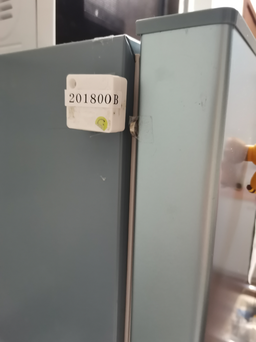
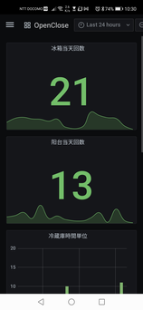
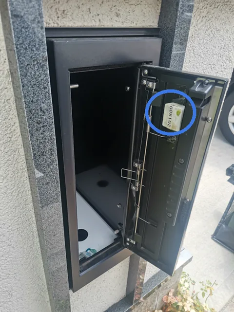
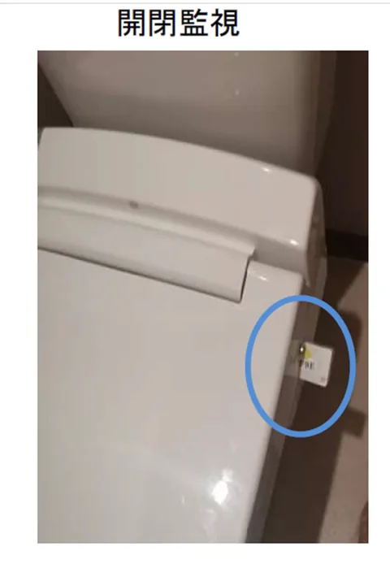

後付け
既存のドアや郵便受けなどにセンサーを取り付け、大きな設備変更を行わずに状態検知を検証しました。
センサーを対象物に取り付け、開閉による状態変化を無線で取得する技術を検証しました。
今回の検証では、冷蔵・冷凍庫の開閉状態を検知対象としました。

冷蔵庫に取り付けたセンサー
一日の開閉回数と状態変化を検知し、把握できる形を検証しました。
センサーが検知した開閉イベントをスマートフォン側で確認し、現在の開閉状態と、これまでの開閉回数を把握できる形を検証しました。

冷蔵庫21回・冷凍庫13回の開閉を検知
実際の検証の様子を動画でも紹介しています。
既存のドアや郵便受けなどにセンサーを取り付け、大きな設備変更を行わずに状態検知を検証しました。
開閉による状態変化を無線で取得し、配線を増やさずに状態を把握できる形を検証しました。
センサーから取得した状態をスマートフォンで確認し、現場の状態を見える化しました。
郵便受けだけでなく、ドア・窓・収納庫・設備など、「開閉を知りたい場所」への展開を想定しています。

投函による開閉を検知し、封筒が入ったらお知らせします。監視カメラと異なり、リアルタイムに通知できる点が強みです。

蓋の開閉を検知し、利用状況を把握します。監視カメラより違和感が少なく、設置しやすい点が特徴です。
収納庫や設備ボックスなど、開閉状態を知りたい場所への利用を想定します。
機器カバーなどの開閉状態を取得し、利用状況の確認に活用できます。